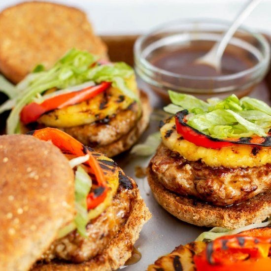

Jerk Chicken Burgers

Home
Description
This is hands down the best Jerk Chicken Burger recipe I have ever had! This recipe comes from the cookbook Eat Delicious by Chef Dennis Prescott.
Ingredients
- 4 6oz chicken breasts
- 1.5 teaspoons kosher salt
- 2 teaspoons cayenne pepper
- 2 teaspoons dark brown sugar
- 1 teaspoon dried oregano
- 1 teaspoon chili powder
- 1 teaspoon smoked paprika
- 1 teaspoon freshly cracked black pepper
- 2 tablespoons olive oil
- 4 burger buns, brioche (or your choice)
- 1 small pineapple, peeled, cored, and sliced into 0.5 inch thick rings
- 0.25 cup Spicy Herb Homemade Mayo or prepared mayo
- 2 tablespoons fresh lime juice
- 1 large tomato, sliced
- 4 burger sized lettuce leaves (romaine or butter lettuce preferred)
Steps
- Place the chicken breasts between two pieces of plastic wrap and lightly bash them with a rolling pin or wine bottle to flatten them (this helps them cook evenly). Combine the salt, cayenne, brown sugar, oregano, chili powder, paprike, and black pepper in a shallow dish. Massage the chicken breasts with the olive oil, then coat them with the spice rub.
- Heat the grill (or grill pan) over medium-high heat. Split the buns and toast them until lightly charred, 2-3 minutes. Set aside.
- Grill the hcicken until cooked through and nicely charred with those awesome grill marks, 7-8 minutes per side. Insert an instant-read thermometer into one piece. If it registers 165ºF, you're golden. Set aside to rest a moment.
- Pop the pineapple rings on the hot grill and cook until charred, 1 minute per side.
- Stir the mayo and lime juice together in a small dish.
- Build the chicken burgers on the toasted buns with 1 tablespoon of the lime mayo, a pineapple ring, a grilled chicken breast, a slice of tomato, and a lettuce leaf.